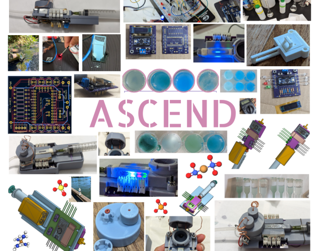
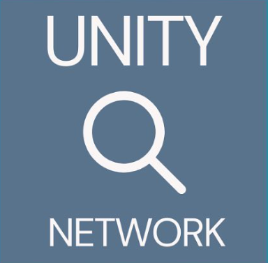
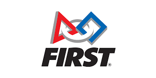

👑 Accomplishments 👑
loquacious and hyperlinked, specially for you
2025
 Joined Stanford's NLP Group
Joined Stanford's NLP Group
Admitted to & enrolled in Stanford's Masters program for Computer Science
Elected Industry Liason Co-chair of Stanford Women in Electrical Engineering (WEE)
CS144 (Computer Networking) course awards: Won "most cited on assignment 3" (i.e. I helped lots of people) and "most lecture participation"
Founded Stanford Tamil Sangam (Student Club)
2024
Somehow managed to make it onto the Stanford EE homepage. Twice!
Hired as a Section Leader: Taught sections for intro-level CS courses at Stanford
Full (24hr Access) Lab64 (EE Makerspace) Member
2023
Joined SSSI (Stanford Student Space Initiative) on the Balloons Subteam.
&&
Circumnavigated
Joined Stanford University as Undergraduate Student

Guest lecture (with hands-on lab activity) at Middle-School STEM Think Tank Summer Camp (3.5 hours)

Founded The Unity Network nonprofit, Editor-in-Chief
TriM Labs LLC Founding Member, CLO, CWO, COO
ISEF Finalist EBED012 "ASCEND"
&&
2023 ISEF Finalist Directory
 Guest invite to the Portland American Chemical Society Chapter Meeting
Guest invite to the Portland American Chemical Society Chapter Meeting
Ranked 3rd in PNW, PNW District Champs Finalist Alliance, Qualified for Worlds. Creativity Award (Week 2 Wilsonville), Autonomous Award (Week 4 OSF) - 1425 Error Code Xero
 2023 April - NWSE Awards (1st in Electrical & Mechanical Engineering; Special Awards: PICA/ACS Applied Chemistry Award, BEST OF FAIR | PHYSICAL SCIENCES)
2023 April - NWSE Awards (1st in Electrical & Mechanical Engineering; Special Awards: PICA/ACS Applied Chemistry Award, BEST OF FAIR | PHYSICAL SCIENCES)
Top 100 in the Blue Ocean Student Entrepreneur Competition; Presenting EUTROSTOP (Based on my ISEF project ASCEND)
CJGSS Awards @ School District Fair (1st in Electrical & Mechanical Engineering; Best of Fair; Special Awards: Noteworthy Logbook; Advance to NWSE and ISEF): "ASCEND, Aqueous Spectrometric Copper-Electrolytic Nutrient Detector"
&&
Students Compete at the CJGSS
National Merit Finalist 2023
JSHS Top 15 projects in Oregon
2022
Published fifth book under pen-name
Published fourth book under pen-name
Oregon Seal of Bilteracy in Spanish (Avant 4S STAMP exam)
Filed Non-Provisional Utility Patent "Handheld Compound Trace Detection Device." Pending.
Joined Wilsonville Broadcast Network (school news) as "Science Writer"
National Merit Semifinalist 2023
Published third book under pen-name
Filed Provisional Utility Patent on my Nitrogen detection method & device: "Handheld Compound Trace Detection Device"
Published second book under pen-name
Elected Technical Integration Lead - 1425 Error Code Xero
Officially Opened "Start Tutoring" Organization
Full Awards: Regeneron International Science and Engineering Fair
&&
West Linn-Wilsonville Students Compete on Science's Biggest Stage
ISEF Finalist EBED017 "Invisible Blues!"
&&
[3rd in Category Embedded Systems] &&
2022 ISEF Finalist Directory
NWSE Awards (1st in Electrical & Mechanical Engineering; Special Awards: Sustainable Development from Ricoh Foundation, OSU General Scholarship)
CJGSS Awards @ School District Fair (1st in Electrical & Mechanical Engineering; Best of Fair; Special Awards: Women in Engineering; Advance to NWSE and ISEF): "Invisible Blues"
 Trinity Music College Of London "GRADE 8" certificate on Classical Piano Performance
Trinity Music College Of London "GRADE 8" certificate on Classical Piano Performance
2021
Published first book under pen-name
ISEF Finalist CHEM034 "Detecting Nitrogen Level in Sample (Electrolysis)"
&&
2021 ISEF Finalist Directory
NWSE Awards (2nd in Chemistry; Special Awards: "Outstanding Chemistry [Related] Project" from Iota Sigma Pi & American Chemical Society)

Semifinalist in PNW Dean's List - District Chairman's and Dean's List Awards
CJGSS Awards @ School District Fair (1st in Energy & Environmental Engineering; Best of Fair; Special Awards: Metric System, Advance to NWSE and ISEF): "Detection of Nitrogen Levels in Sample Using Novel Method"
2020
Elected Software Subteam Lead - 1425 Error Code Xero
NWSE Awards (HM in Mathematics)
&&
WestLinn-Wilsonville Students Wow at State Science Fair
CJGSS Awards @ School District Fair (2nd in Physics & Mathematics; Special Awards: Analog Poster; Advance to NWSE and ISEF-Observer)
&&
Multiple awards won at this year’s ISEF ceremony
2019
Joined FRC Team 1425 Error Code Xero
Competed at World's with FTC Team 8949 The Gifted Gears [2nd year]
Violin II in OMEA Allstate Middle School Orchestra
2018
Competed at World's with FTC Team 8949 The Gifted Gears [1st year]
Violin II in OMEA Allstate Middle School Orchestra
2017
Joined FTC Team 8949 The Gifted Gears
2016
 2nd at State in FLL: "Robotics team dominates competition (FLL Team 17347 The Code Dominators)"
2nd at State in FLL: "Robotics team dominates competition (FLL Team 17347 The Code Dominators)"
2015
 Started & Joined FLL Team 17347 The Code Dominators
Started & Joined FLL Team 17347 The Code Dominators